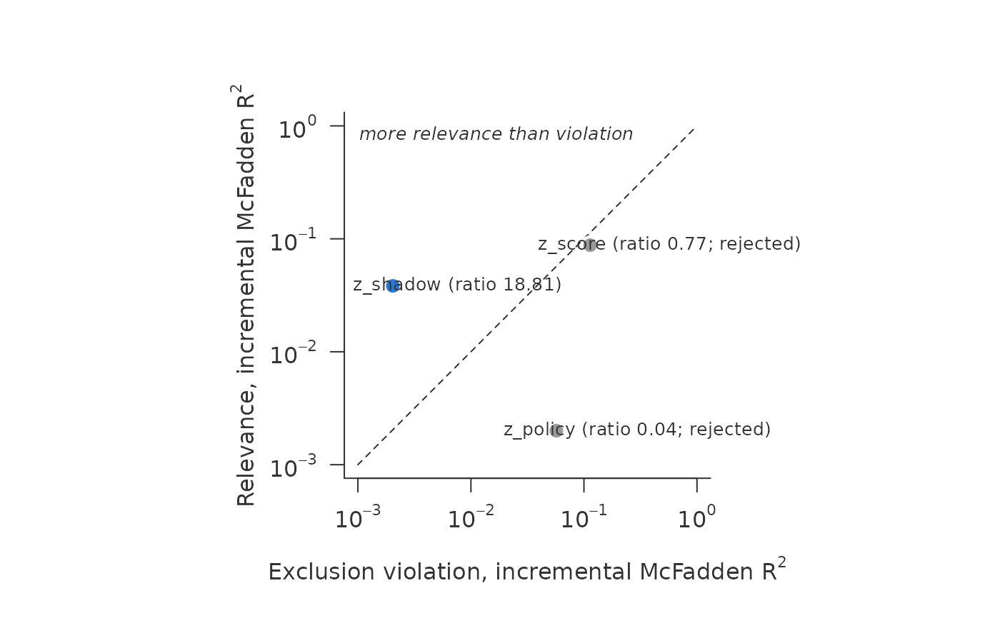

shadow_screen() asks whether a variable \(Z\) is fit to serve as a
shadow variable for an outcome \(Y\) that is missing not at
random, binary, categorical or numeric: relevant for \(Y\) given \(X\), and excluded from the response
model given \(X\) and \(Y\). It is a different tool from
sharp_scan(): the screen presupposes a shadow-variable model that
point-identifies the selection parameter; the scan needs no shadow variable
and returns an identified set. Do not read the two as one procedure.
Arguments
- data
A data frame.
- outcome
Name of the outcome column. May be
NAwhere unobserved.- response
Name of the response indicator column (0/1 or logical; 1 = outcome observed).
- covariates
Character vector of covariate names \(X\); may be empty.
- candidates
Character vector of candidate names \(Z\). Factors are allowed and enter with their degrees of freedom.
- family
Family of the outcome model, passed to
glm(). The response model is always binomial. With the binomial default a numeric outcome with more than two values is screened by an ordinal model on classes, and a factor outcome with more than two levels by an ordinal or a multinomial model; see the sections on a numeric and a categorical outcome. Another family (saypoisson()for counts) fits thatglminstead.- min_relevance
Minimum relevance \(\chi^2\) per degree of freedom for a candidate to pass. Default 10.
- min_ratio
Minimum ratio of relevance to exclusion for a candidate to pass, applied only together with
min_relevance. Default 1, the equality line; see the details for why it is no test of exclusion.- numeric
"linear"(default) or"classes"; see the section on numeric characteristics.- k
Target number of classes for
numeric = "classes". Default 10.- outcome_classes
Number of classes of about equal mass for a numeric outcome, cut only between distinct values as in
screen_classes(). Default 5. An outcome with at most this many distinct values (a count, a rating) uses them as its levels; heavy atoms can leave fewer classes than asked, andprint()says so.
Value
A data frame of class "shadow_screen", one row per candidate,
with candidate, relevance, exclusion, ratio, relevance_chisq_df,
exclusion_chisq_df, df, n_observed, n, epp_relevance and
epp_exclusion (cases of the rarer class per parameter of the outcome
and of the response model; NA for a target that is not binary),
ratio_readable (FALSE where the exclusion \(\chi^2\)/df is below 1),
verdict ("pass" or
"reject") and reason. Attribute "coding": one row per numeric
characteristic with its treatment, the number of classes, the share of
rows outside the range seen among the observed rows, and, for classes,
the heaping share of screen_classes(). Attribute "outcome_coding":
model ("glm", "ordinal" or "multinomial"), the number of outcome classes, the
number requested and the number of distinct observed values.
Details
Why a shadow variable. The observed rows alone cannot tell missing at random from selection on \(Y\): every model fitted to them fits equally well whatever the missing outcomes are. A shadow variable is an assumption that fills this gap. With one, how selection depends on \(Y\) can be estimated instead of assumed. In lending, a candidate is a characteristic that the lender recorded but did not use in the decision; in a trial, an earlier measurement of the outcome.
What the screen does. Exclusion cannot be checked directly: it conditions on \(Y\), which is missing in exactly the rows that matter. The screen measures what the data can show, whether a candidate is relevant at all and whether it predicts selection more strongly than it predicts the outcome. The second is the mark of a variable that the selection uses directly, such as a score the lender decides on. Unfit candidates can so be discarded before a model is built on one.
For each candidate four nested glms are fitted: \(Y\) on \(X\) and on
\(X + Z\) among the observed rows, and \(R\) on \(X\) and on
\(X + Z\) on the pooled sample. Two axes are reported, both as
incremental McFadden \(R^2\), so that they share one scale:
$$\Delta R^2 = \frac{D(X) - D(X + Z)}{D_0},$$
the drop in deviance from adding \(Z\), divided by the null deviance of
the same response on the same rows.
relevance: \(\Delta R^2\) of \(Z\) in the outcome model;
exclusion: \(\Delta R^2\) of \(Z\) in the response model, i.e. the size of the exclusion violation;
ratio: relevance / exclusion. Above one, \(Z\) predicts the outcome better than it predicts selection.
As a second column for each axis the likelihood-ratio \(\chi^2\) per
degree of freedom is reported, the form in which relevance is read against
the conventional first-stage standard of 10. It is the measured
\(\Delta R^2\) divided by its noise floor: without any effect,
\(\chi^2\) has mean df, so the same coding yields \(\Delta R^2\)
of about df / \(D_0\) from noise alone. min_relevance = 10 asks for
ten times that floor. The floor grows with the degrees of freedom, so a
finer coding raises \(\Delta R^2\) by itself; \(\chi^2\)/df does not.
The same holds for the denominator of the ratio: where the exclusion
\(\chi^2\)/df is below 1, the violation is not told apart from noise and
the ratio is a division by noise. Such ratios are flagged in
ratio_readable, reported by print() as a "violation at noise level"
and drawn as hollow points in the plot. For the candidate this is good news:
no violation is measured. Only the ratio is not an estimate. In large
samples every violation is significant, so exclusion should be read as an
effect size, not a test.
Exclusion is measured marginally over \(Y\): the pooled response model cannot condition on an outcome that is missing. Under nonignorable selection a relevant \(Z\) therefore shows some exclusion signal through \(Y\) even when it is validly excluded; the screen is a screen, not a test of the restriction. The ratio therefore counts only together with the relevance requirement, never on its own: the stronger the selection on the outcome and the association, the closer a validly excluded candidate moves to the equality line (Bücker 2026, arXiv v3, Section 7.3, "The screen when the outcome is continuous", measures this on a design where exclusion holds exactly), and for a candidate without relevance the ratio is noise that shifts with the coding. The equality line is not the border between usable and unusable candidates; a ratio near one does not by itself show a violation, a ratio well below one does.
A numeric outcome. When the observed outcome is numeric with more than
two values and family is left at its binomial default, relevance comes
from a proportional-odds model (MASS::polr()) on outcome_classes
classes of about equal mass of the observed outcome, or on its values if
it has no more; exclusion is unchanged, and is fitted once per candidate.
Adding \(Z\) costs its own degrees of freedom whatever the number of
classes, while the null deviance, twice \(n\) times the entropy of the
class shares, grows with it (up to \(2n\log k\) for \(k\) classes). So \(\Delta R^2\) falls as the
classes get finer while \(\chi^2\)/df rises towards the continuous
association: compare candidates under one coding only, and read
\(\chi^2\)/df, not \(\Delta R^2\), across codings. Five classes is a
choice for the stability of the ordinal model (few cut points, the
proportional-odds assumption over few cuts), not an optimum. Bücker (2026),
arXiv v3, Section 7.3, "The screen when the outcome is continuous", shows the behaviour
of both measures in the number of classes and checks the screen against a
known truth.
A categorical outcome. A factor or character outcome with more than two
observed levels is screened in the same way, with its levels as classes:
an ordered factor in the proportional-odds model, an unordered one in a
multinomial logit (nnet::multinom()), where a candidate costs its
degrees of freedom once per level beyond the first. A factor with two
observed levels is binary.
The screen measures relevance; it does not certify identification. Identification with a shadow variable needs more than dependence of \(Z\) on \(Y\) given \(X\): in a parametric tilt model a rank condition, in a nonparametric one completeness, which can fail in simple models once the outcome or the candidate is continuous; Beppu and Morikawa (2024) give a condition for categorical candidates that can be checked on the observed data. The screen checks neither. And under selection on the outcome a relevant candidate shows exclusion signal through \(Y\) even when it is validly excluded, the more so the stronger the selection and the association.
Numeric characteristics. With numeric = "linear" (the default) a
numeric column enters linearly. Where the selection decision uses a
characteristic through a threshold – a lender that declines every
application below a score cut-off – a linear term cannot represent the
step, and the exclusion violation is understated, often by an order of
magnitude. The screen warns when a numeric characteristic takes values
never seen among the observed rows on more than 1% of the sample, the
visible trace of such a rule.
numeric = "classes" codes every numeric covariate and candidate with
more than two distinct values by screen_classes(): about k classes of
equal mass, cut only between distinct values, plus a class "below" or
"above" for values outside the range seen among the observed rows. The
relevance hardly changes; the exclusion axis does. The cost is degrees of
freedom: a candidate with ten classes has nine, so its relevance
\(\chi^2\) per degree of freedom is lower than with one linear term,
and a candidate that is relevant only through a smooth trend can fall
below min_relevance. Read both codings when they disagree. The coding
used is stored in attr(x, "coding"). Flexible coding pays only when the
sample carries the degrees of freedom: the screen warns when a model has
fewer than 10 cases of the rarer class per parameter, separately for the
outcome model, fitted to the observed rows, and the response model.
Two different questions sit behind the coding. Whether a characteristic
needs flexible coding is answered by the gap in support: the share of rows
outside the range seen among the observed rows (outside in
attr(x, "coding")), which a threshold in the selection leaves and a
threshold that only defines the population does not. Whether classes are
well defined is answered by the mass on single values (heaping, reported
for numeric = "classes" and by screen_classes()). Classes
are cut only between distinct values, so heavy atoms give classes of
unequal mass, not arbitrary ones. A loan amount in round numbers shows
both: no gap in support, so a linear term suffices; where an analysis
codes it in classes all the same, for instance to compare two codings
that differ in nothing else, the heaping shows whether that result is
well defined. For other cut-offs or class counts
per characteristic, code the columns yourself with screen_classes() and
pass factors.
References
Bücker, M. (2026). The price of a weak shadow variable: inference under nonignorable missingness as relevance vanishes. doi:10.48550/arXiv.2610.14695
Beppu, K. and Morikawa, K. (2024). Verifiable identification condition for nonignorable nonresponse data with categorical instrumental variables. Statistical Theory and Related Fields, 8, 40–50.
Examples
d <- simulate_shadow(5000, tilt = -1, seed = 1)
sc <- shadow_screen(d, outcome = "y", response = "observed",
covariates = c("x1", "x2"),
candidates = c("z_shadow", "z_policy", "z_score"))
sc
#> <shadow_screen> relevance vs exclusion violation, incremental McFadden R^2
#> pass: relevance chi2/df >= 10 and ratio > 1
#> numeric as linear terms: x1, x2, z_shadow, z_policy, z_score
#> candidate relevance exclusion ratio chi2/df verdict
#> z_shadow 0.0383 0.00204 18.8 55 pass
#> z_policy 0.002 0.057 0.0351 2.87 reject: weak, exclusion
#> z_score 0.0879 0.114 0.774 126 reject: exclusion
plot(sc)

# numeric characteristics as classes, robust to threshold rules
shadow_screen(d, "y", "observed", c("x1", "x2"), "z_score",
numeric = "classes")
#> Warning: Fewer than 10 cases of the rarer class per parameter in the outcome model (observed rows) for: z_score (7.2). The incremental McFadden R^2 has no penalty for degrees of freedom, so extra parameters can manufacture relevance or violation. Prefer linear coding or a smaller `k`.
#> <shadow_screen> relevance vs exclusion violation, incremental McFadden R^2
#> pass: relevance chi2/df >= 10 and ratio > 1
#> numeric as classes: x1 (11), x2 (10), z_score (11)
#> candidate relevance exclusion ratio chi2/df verdict
#> z_score 0.0897 0.11 0.814 14.3 reject: exclusion
# a continuous outcome: relevance from an ordinal model on five classes
dc <- simulate_shadow(3000, tilt = -1, outcome = "continuous", seed = 1)
dc$y[dc$observed == 0] <- NA
shadow_screen(dc, "y", "observed", c("x1", "x2"), c("z_shadow", "z_policy"))
#> <shadow_screen> relevance vs exclusion violation, incremental McFadden R^2
#> pass: relevance chi2/df >= 10 and ratio > 1
#> relevance: ordinal model on 5 classes of the observed outcome; R^2
#> falls as classes get finer, so compare chi2/df across codings
#> numeric as linear terms: x1, x2, z_shadow, z_policy
#> candidate relevance exclusion ratio chi2/df verdict
#> z_shadow 0.0508 0.000115 442 196 pass
#> z_policy 0.000623 0.0382 0.0163 2.4 reject: weak, exclusion
#> violation at noise level (exclusion chi2/df below 1; the ratio
#> divides by noise): z_shadow